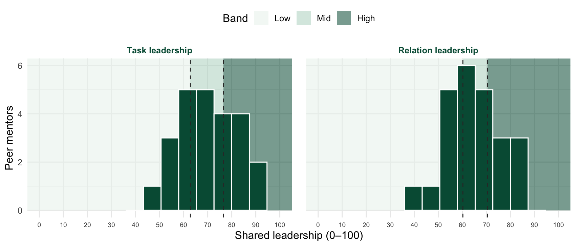

| Password | Task leadership | Task leadership (%) | Relation leadership | Relation leadership (%) |
|---|---|---|---|---|
| aspen8478 | 74.8 | 61% (mid) | 60.4 | 35% (mid) |
| basil7339 | 58.4 | 22% (low) | 81.0 | 96% (high) |
| cedar1237 | 91.0 | 100% (high) | 55.2 | 26% (low) |
| cobalt5204 | 70.0 | 48% (mid) | 54.6 | 22% (low) |
| cove9145 | 69.2 | 43% (mid) | 61.2 | 39% (mid) |
| delta4193 | 62.6 | 26% (low) | 71.4 | 70% (high) |
| ember1718 | 82.6 | 83% (high) | 75.0 | 78% (high) |
| flint7490 | 55.0 | 13% (low) | 80.6 | 91% (high) |
| gable2596 | 68.6 | 39% (mid) | 62.0 | 43% (mid) |
| harbor6758 | 54.6 | 9% (low) | 72.6 | 74% (high) |
| heron8725 | 80.6 | 78% (high) | 63.6 | 52% (mid) |
| indigo6874 | 89.8 | 96% (high) | 53.6 | 13% (low) |
| juniper1886 | 62.8 | 30% (low) | 39.6 | 0% (low) |
| kelp3684 | 58.0 | 17% (low) | 69.6 | 61% (mid) |
| lumen2490 | 79.6 | 74% (high) | 66.6 | 57% (mid) |
| maple8665 | 83.0 | 87% (high) | 59.8 | 30% (low) |
| marsh9701 | 75.6 | 65% (mid) | 53.6 | 13% (low) |
| nimbus7550 | 50.4 | 0% (low) | 78.6 | 87% (high) |
| onyx8113 | 62.8 | 30% (low) | 70.0 | 65% (mid) |
| opal9277 | 51.6 | 4% (low) | 51.4 | 9% (low) |
| otter2610 | 71.0 | 52% (mid) | 85.8 | 100% (high) |
| pine6790 | 78.6 | 70% (high) | 78.4 | 83% (high) |
| quartz4334 | 71.6 | 57% (mid) | 63.4 | 48% (mid) |
| willow4288 | 84.0 | 91% (high) | 46.8 | 4% (low) |
7. Leadership Target
Is your leadership style task or relational oriented?
The Mindset(s)
SPLIT is a team-referent measure: it asks how much the team as a whole shares leadership, not how much you personally lead. Every item begins “As a team we…”.
- Task leadership: the team assigns work, communicates expectations, and tracks whether goals are met.
- Survey item: “As a team we clearly assign tasks.”
- Relational leadership: the team attends to concerns, recognizes good work, builds cohesion, and handles conflict.
- Survey item: “As a team we take sufficient time to address each other’s concerns.”
Polarity: Task ↔︎ Relational.
Measure: SPLIT · task and relation subscales (Grille & Kauffeld, 2015). Ten items, five per subscale, rated 0–100.
Find Your Score
Use your password to find your score(s).
Locate Your Score
Locate your score(s) relative to other peer mentors!

Reflect and Plan
WarningJournal
- Score: How does reflecting on your score help you think about who you are as a mentor?
- Behavior: To be the best mentor you can be, what is one new thing you will try to do this week for mentees and/or your team?
TipDuring Class
Make note of whether your team leans on task coordination or on relationships to get its work done.
TipUGPM Meeting
This is the week your printed, full mentoring profile is revealed.